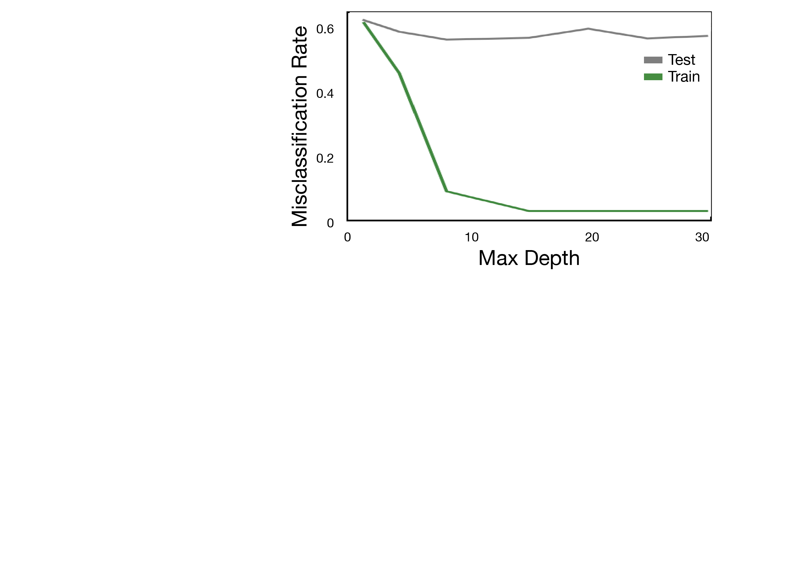
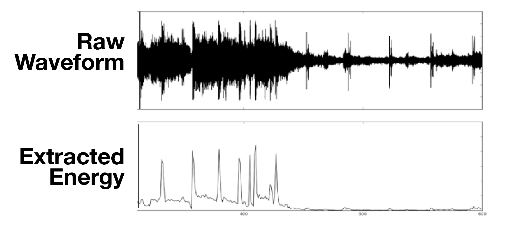
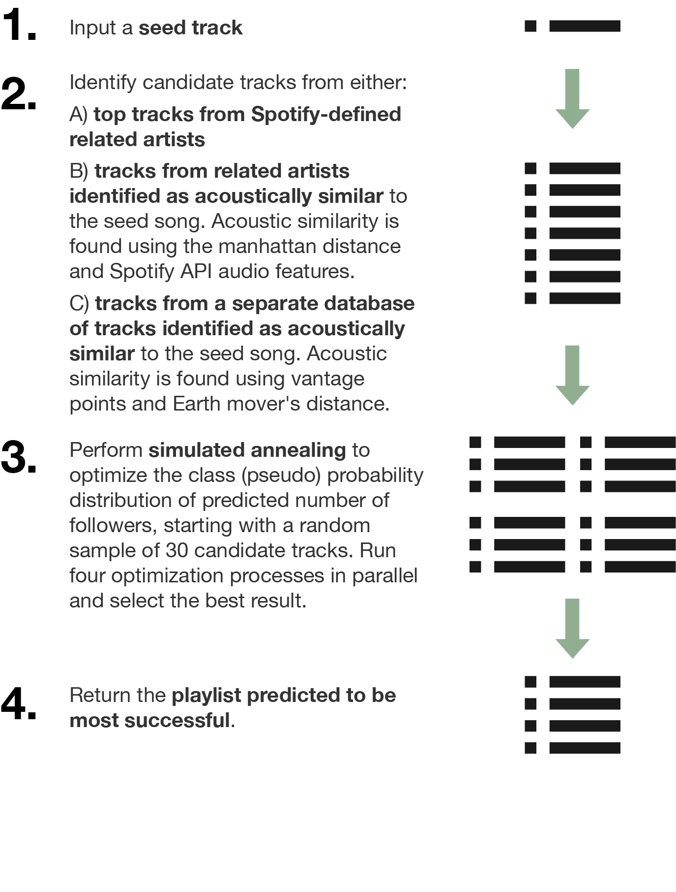

Creating the
Perfect Playlist:
Optimizing Playlist Selection & Sequencing on Spotify
Laura Ware, Sonu Mehta, Omar Abboud
BEGIN
Overview & Motivation
Introduction
In fulfilling its mission to grant people all over the world access to the music they love, Spotify has developed a number of innovative technologies. Playlists in particular are an effective vehicle by which Spotify relays and recommends tracks to millions of users. While most playlists on the platform are generated by users themselves, Spotify-curated playlists are amongst the most popular, being followed in some cases by millions users. These playlists are created through a combination of algorithmic and human-driven processes. These playlists are both personalized (such as the esteemed Discover Weekly playlist) as well as intended for general browsing based on genres, moods, or even current events.
This capstone project aims to answer the following question: to what extent can we predict the success
of a Spotify-curated playlist, based only on the songs that comprise that playlist? Do the intrinsic
features of a song, from it acoustic properties to its relative position within a playlist, contribute
to how well users will respond to that playlist?
More specifically, our project aims to develop a predictive model of playlist success that can be used to generate playlists algorithmically, given an optimization function, a sampling algorithm from Spotify's universe of tracks and artists, and only one input song of interest from which to seed the playlist.
Data Source
The primary cata source used for this project was the publicly available Spotify Api. From the API, we obtained valuable information about playlists, from their lengths and popularities to their component songs and a list of Spotify-derived audio features for each track. For this project we analyzed 2,000 playlists that have been individually curated by Spotify, encompassing a universe of roughly 20,000 songs.
Project Features
Our project is divided into the following broad spheres of analysis:
- Deciding on a suitable metric for popularity
- Developing a per-song training set of features from the Spotify API to predict the popularity of any given playlist (or collection of tracks)
- Deriving our own audio features using sophisticated signal processing and feature extraction techniques
- Using Spotify's and our own features to generate similarity metrics that can optimize the creation of a new, popular playlist given an input song of interest
Data Exploration and Visualization
This carousel cycles through primary observations learned through the data exploration phase of the project, such as understanding the relationship between the mean popularity of a playlist's tracks and the overall popularity of a playlist.


Predicting Playlist Popularity
This section describes a series of models that predict the popularity of a playlist, defined as the number of playlist followers binned into 5 popularity levels based on quantile. The inputs to this model include various attributes relating to the playlist as well as its component songs. As the number of songs per playlist varies, summary metrics were decided upon and tested in order to generate a final array of playlist-level features that could be used for a suitable prediction.
Subset 1: Song-Level Data
The Spotify API provides a number of important data points on the track level, namely the popularity of the track on an index basis from 1 to 100, as well as the number of markets the song is available in. The API also notably includes the following audio-based features per song: acousticness, danceability, duration, energy, instrumentalness, key, liveness, loudness, mode, tempo, valence, and time signature.
Subset 2: Playlist-Level Data
Playlist-level data includes three primary metrics: the number of followers (in other words, the response variable we are trying to predict), the number of tracks that are in the playlist, and an indicator corresponding to whether the playlist is featured or not.
Generating a Training Set
One important observation that guided our modeling approach for playlist popularity prediction
was the understanding that the mean popularity of a playlist's tracks were a rough proxy or
independently strong predictor of popularity. In order to improve upon the predictive ability of an
all-encompassing model, however, our goal was to determine whether the addition of acoustical
features to a training set would improve the classification rate of a predictive model.
In order to generate a training set of playlist-level features, a careful consideration of track-level analysis had to be made in order to aggregate song data in a meaningful way. While simple averaging or addition could have been a simple solution, capturing the distribution of acoustic features more precisely should contain better predictive ability. As a result, our approach was to first approximate the distribution of acoustic features by representing each acoustic features in 5 different columns, each corresponding to the quantile of that feature's distribution across the playlist. The second, and chosen, approach was to instead reflect the distribution through sequencing, by providing the median value of that acoustic feature for songs that belong to a particular quartile of the playlist's progression.
Baseline Model: Results
Various models were tested for predicting playlist popularity, including logistic regression, support vector machines, and random forest classifiers. The best performing model was a random forest whose overall accuracy was 78% on a training set when both acoustic features and metadata were included.

Final Model: Results
After implementing a rigorous regime of training and testing with cross-validation and tuning, the best performing model was also a random forest classifier of depth 29. While the training set was classified with almost perfect accuracy, results on an out-of-bag testing sample were roughly 50%, indicating a rare case of overfitting within the random forest.
Raw Audio Analysis
Raw-audio Feature Extraction
As part of our dataset, we have 30 second raw-audio samples for 15k songs. We extracted 34 acoustic features from raw-audio at each second using a feature extraction library available here The acoustic features include 13 Mel Frequency Cepstral Coefficients(MFCC) , 12 Chroma coefficients in addition to energy and other spectral features. These features are a characteristic of the frequency and pitch of the songs. Combining all the 34 features taken at 30 timestamps of a song make 1020 dimensional predictor for a song. 
Extraction of energy from track with frame rate = 1 second
Predicting track popularity
This section describes modelling techniques used to predict the popularity of a track given the raw-audio features.
The predictors are the mean value of the individual raw-audio features extracted at 30 timestamps and the response is the track popularity (in range 0-100) available from spotify api. Dimensionality reduction techniques like PCA did not give improvement in model performance so, we decided to take the mean value of each feature.
- Regression Model: Regression models like linear regression , GAMs(Generalized additive models) and Random Forest Regressors were implemented and the best model was Random Forest Regression with R2 = 0.35. Since the regression models do not perform well, we changed the problem to a classification problem by binning the response variable in 6 bins. The songs of low popularity (0-50) were put in bin 1, bin 2 contains songs of popularity 50-60 and so on.
- Classification Model: Random Forest Classification Model turned out to be the best classifier out of different classifiers with cross-validation classification accuracy of 76%. More importantly, the class of the most popular songs has F-score=1(precision =1, recall =1) ,i.e., the most popular class has zero misclassification rate. The dataset was skewed, with a lot more low popularity songs compared to high popularity songs. Class weights were used to tackle imbalanced dataset.
Acoustic Similarity
The traditional approach technique of determining acoustic similarity is by hand. But this is infeasible for large quantities of music. Some researchers have tried to analyize MIDI music data to find melody contour for each part of music. But the type of music similarity required for playlist construction is based on the overall sound of music rather than just the melody. One of such approaches is to use the indexing based on matching features such as Mel-frequency cepstral coefficients(MFCCs), Chroma coefficients and energy etc. For this project, we used the following two metrics to get acoustically similar songs.
Earth Movers Distance
The EMD calculates the minimum amount of ‘work’(probability mass) required to transform one spectral signature into the other.Obtaining the spectral signature
The spectral signature attempts to capture the main statistics of the freqeuncy and chroma coefficients to characterize the main types of sounds present in a track. We achieve this by dividing each song into 30 frames each of 1 second.
- For each frame, we extract 34 acoustic features which consists of 13 MFCCs, 12 Chroma coefficents in addition to other spectral and energy features.
- Once we have these frames, we use Gaussian Mixture Models based clustering to cluster them into 4 clusters for each song.
It is important to note that the clustering is local to each song. The clusters are characterized by means, covariances and weights( weight is proportional to the no. of frames present in each cluster). The set of clusters define the signature of a song. Mathematically, $\{(μ_{p_1}, Σ_{p_1}, w_{p_1}),.....(μ_{p_m}, Σ_{p_m}, w_{p_m})\}$ is the signature of a song where $μ_{p_1}$ and $Σ_{p_1}$ are the mean and covariance respectively of the cluster $p_i$ and $w_i$ is the weight of that cluster.
Once we have the spectral signature of two songs, we use EMD to calculate the similarity between songs. We use symmetric form of KL divergence to calculate the distance between two clusters. Linear programming is used to minimize the cost (defined by multiplying flow with KL divergence distance). Finally EMD is calculated as weighted sum of distances between clusters where weights are flow(probability mass). The lower the EMD value, the more the similarity between songs.
Optimize song search
We have a database of around 15000 songs with their spectral signature. Given a track, its computationally expensive to calculate its EMD from the entire database of songs. To optimize the search process, we use vantange points method. The database of songs is clustered into 10 clusters using Kmeans clustering and the cluster centres are chosen as vantange points. Given an input track, we find the closest vantange point and then return top 200 acoustically similar songs from that cluster (where acoustic similarity is calculated using EMD). This reduces the computation of EMD to a subset of songs.
Manhattan Distance
Calculating EMD between two songs a computationally expensive. In addition to that, raw-audio is required to get the spectral signature. To deal with computational complexity, we used Manhattan distance to calculate song similarity. Instead of using raw-audio features, we used acoustic features provided by spotify api as a feature set for the song. We used this distance metric to get a list fo acoustically similar songs from related artists.Playlist Generation
Algorithm Overview
Results
As well as selecting one bucket of candidate songs, our implementation allows the user to select multiple buckets and input a weighting to define the proportions of each bucket included in the candidate list. We can understand the effects of using different buckets by varying the weights. For example, if we select tracks from both A) top tracks by related artists as well as B) acoustically similar tracks from related artists, we can observe that increasing the proportion of top tracks will give us somewhat better results for the track Shape of You by Ed Sheeran.
However, using a higher proportion of top tracks will also prevent the final playlist from including songs that are acoustically similar to the seed song, and will limit the addition of new or undiscovered music that may be unlikely to appear in top tracks from related artists.

Playlist Optimization: Simulated Annealing
Overview
In order to return the playlist that maximizes the number of followers, we optimize the set and order of tracks using simulated annealing, an optimization technique for estimating the global optimum of a function.
See Appendix A for more detailed background about simulated annealing.
Implementation
We begin by initializing four simulated annealing processes in parallel. For each process:
- Based on the selected list of candidate tracks and the desired annealing duration, tune the parameters and initialize the number of steps and initial and final temperature.
- Initialize the state (playlist chosen randomly without replacement from the list of candidate tracks).
- Perform L steps:
- Propose a new state (playlist) by swapping out one track with a different track in the candidate list
- Measure the predicted class probabilities for number of followers using the trained random forest classifier, and calculated the new energy. If the energy decreases, accept the change. If the energy increases, accept or deny the change if $e^{{ΔE}{T^{-1}}}< r$, where r is a random variable between 0 and 1. If the swap is accepted, set $x_{i+1}=x_j$, else return to the old state.
- Until the defined number of steps, return to step 3 and propose and new swap.
- After the four processes complete, select the result with the lowest final energy.
Cost Function: We define our cost (energy) $E$ as $10^4 *(1-(0.25P_4+0.75P_5))$, where $P_j$ is the class (pseudo) probability of that the playlist is in class $j$
Results
Simulated annealing effectively lowers the energy, plateauing after several hundred transitions.
Optimization performance is significantly better than the baseline of random sampling, resulting in substantially higher probabilities for classes 4 and 5 (top two classes).
Interactive Playlist Demonstration
1. Select Seed Song
| Song Name | Artist | Preview |
|---|---|---|
| Shape of You | Ed Sheeran | |
| Piano Sonata No. 14 in C Minor | Mozart | |
| Daydream | Ciele (ft. Chris Ho) |
2. Select Category of Candidate Songs
| Method |
|---|
| Top Tracks From Related Artists |
| Similar Tracks From Related Artists |
| Similar Tracks From Vantage Points Database |
3. View Playlist & Class Probabilities
| Recommended Playlist | Popularity |
|---|
Conclusions & Future Work
Conclusions
Playlists can be optimized for popularity using acoustic and non-acoustic features extracted from component songs. Non-acoustic features include the song's popularity, its availability in world markets, and other metadata obtained from the record summary. Acoustic features include prescribed signals for energy, liveliness, tempo, and key, with additional features engineered and sampled by us.
Generating a playlist given an input song of interest was performed using simulated annealing, which optimized combinations and sequences of songs across a pool of candidate tracks. Our final module allows a user to specify the pool of candidate songs from a list of three options: a network of top tracks from related artists, a network of similar tracks from related artists, or a system of similar tracks that are 100% acoustically-derived from across the Spotify universe.
Future Work
We recommend two areas of future research: first, steps must be taken to mitigate the rare case of overfitting that affected our random forest classifier, which over-predicted unpopular playlists in the testing set. Second, more metadata must be collected and then incorporated as predictors of popularity to ensure that acoustical features are not capturing information such as release date or other non-intrinsic characteristics.
Challenges
Evaluating recommendation systems is always tricky, as there is often no definite metric to measure acoustic similarity. This problem is usually approached in a subjective way, whereby music experts rate the similarity of songs and finally the majority vote is taken to generate similarity scores between songs. Based on literature review, we found that songs we deemed to be acoustically similar belonged to the same genre more that 90% of the time. To further evaluate our model for acoustic similarity, we listened to the songs ourselves and noted striking similarities in the acoustics, singing style, and genre.
Evaluating our playlist generation engine is also challenging for two primary reasons.
- We have a limited dataset of ~1700 playlists, and only 25% of the songs present in those playlists included raw audio available for us to analyze.
- Part of our goal was to incorporate songs into successful playlists that belonged to lesser-known artists, which accounts for about 25% of our data. Our loss function, however, accounted only for overall playlist popularity and didn't penalize for popular or unpopular songs within the playlist.
Appendix A: Simulated Annealing
Background
Simulated Annealing is one of the most popular techniques for global optimization. The technique is based on the physical annealing process, in which a system is first heated to a melting state and then cooled down slowly. When the solid is heated, its molecules start moving randomly, and its energy increases. If the subsequent process of cooling is slow, the energy of the solid decreases slowly, but there are also random increases in the energy governed by the Boltzmann distribution. If the cooling is slow enough, and deep enough to unstress the solid, the system will eventually settle down to the lowest energy state where all the molecules are arranged to have minimal potential energy.
Suppose the system is in a state with energy $E_i$ (function at current $x_i$ has value $E_i$) and subsequent to the random fluctuation to position $x_j$, now has energy state $E_j$. We denote the change in the energy due to the state change as $ΔE=E_j−E_i$. The move to the new position $x_j$ is done via a proposal. If the new state has lower energy than the current state, we go into this new state. This stochastic acceptance of higher energy states, allows our process to escape local minima.
As the temperature is lowered, there will be more concentrated search effort near the current local minimum, since only few uphill moves will be allowed. Thus, if we tune our temperature decrease schedule appropriately, we hope to converge to a global minimum. If the lowering of the temperature is sufficiently slow, the system reaches “thermal equilibrium” at each temperature.
Algorithm
- Initialize the state $xi$, temperature $T$, $L(T)$ where $L$ is the number of iterations at a particular temperature.
- Perform L transitions thus (we will call this an epoch):
- Generate a new proposed position x
- If $x$ is accepted (according to probability $P=e^{{ΔE}d{T}}$), set $x_{i+1}=x_j$, else set $x_{i+1}=x_i$.
- Update $T$ and $L$
- Until some fixed number of epochs, or until some stop criterion is fulfilled, return to step 2.
Hill Climbing with Simulated Annealing
By Kingpin13 - Own work, CC0, Link
References
- Berenzweig, Adam, Beth Logan, Daniel P.W. Ellis, & Brian Whitman. A Large-Scale Evaluation of Acoustic and Subjective Music Similarity Measures. Proceedings of the ISMIR International Conference on Music Information Retrieval (Baltimore, MD), 2003, pp. 99–105.
- Logan, B., “A Content-Based Music Similarity Function,” (Report CRL 2001/02) Compaq Computer Corporation Cambridge Research Laboratory, Technical Report Series (Jun. 2001).
- Charu C. Aggarwal, Alexander Hinneburg, and Daniel A. Keim. 2001. On the Surprising Behavior of Distance Metrics in High Dimensional Spaces. In Proceedings of the 8th International Conference on Database Theory (ICDT '01), Jan Van den Bussche and Victor Vianu (Eds.). Springer-Verlag, London, UK, UK, 420-434.
- Dave, R., “Simulated Annealing,” AM207: Stochastic Optimization & Monte Carlo Methods for Data Analysis and Inference, Harvard University. Course Website (accessed 05/09/2017). https://am207.github.io/2017/wiki/simanneal.html.